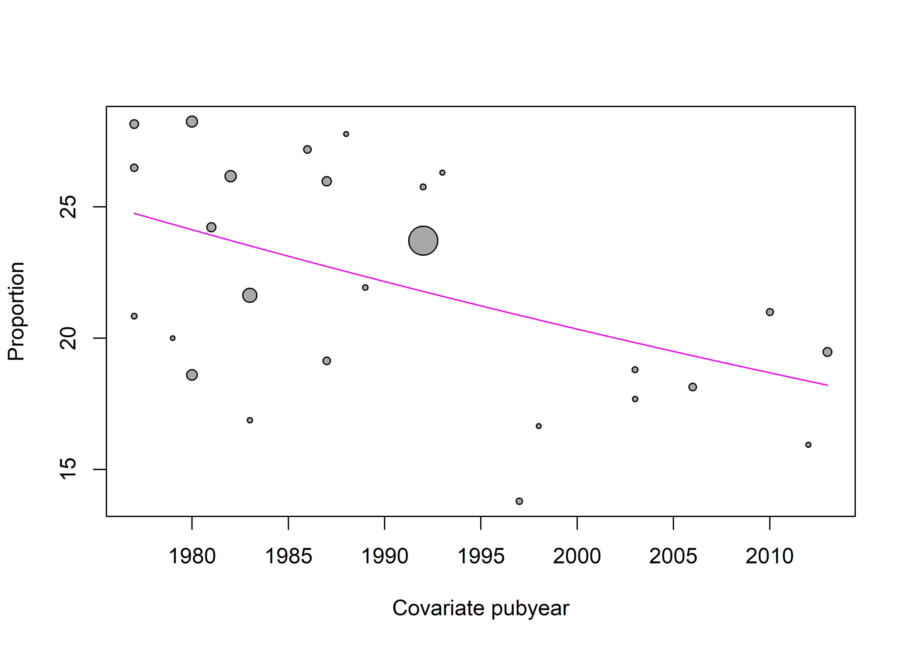
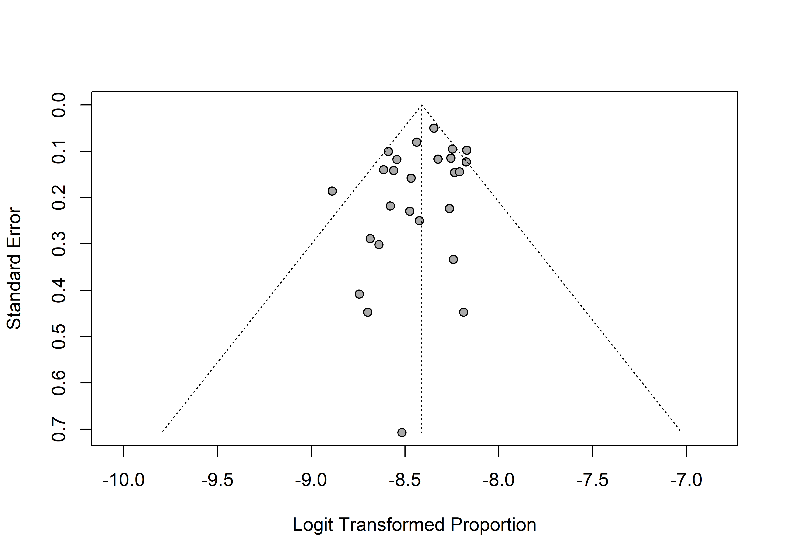

# Cargar paquetes
pacman::p_load(
janitor,
meta,
tidyverse
)Exploración de la heterogeneidad
Tamara Ricardo ![]()
Introducción
En la clase anterior abordamos el ajuste de modelos de efectos fijos y aleatorios, la representación gráfica de los resultados mediante forest plots y la estimación de la heterogeneidad estadística. En esta clase, nos enfocaremos en distintas estrategias para controlar la heterogeneidad observada y evaluar la robustez de los modelos ajustados.
Análisis de moderadores
El análisis de moderadores permite explorar fuentes de heterogeneidad entre los estudios incluidos en un meta-análisis. Se asume que los estudios no provienen de una misma población base sino de distintas subpoblaciones o subgrupos, cada una con su propio efecto verdadero.
Puede realizarse incorporando como moderador una variable categórica (análisis de subgrupos) o una variable numérica (metarregresión).
Este enfoque contribuye a:
Evaluar hipótesis sobre variaciones en la magnitud del estimador de efecto entre estudios.
Interpretar diferencias observadas en los resultados.
Para evitar sesgos de selección, es fundamental definir las variables moderadoras durante la extracción de datos en la revisión sistemática.
Análisis de sugbgrupos
En el análisis de subgrupos se asume que los estudios no provienen de una población única, sino de distintos subgrupos poblacionales, cada uno con su propio efecto verdadero.
El análisis consta de dos etapas:
Estimación del efecto dentro de cada subgrupo.
Prueba estadística para evaluar diferencias entre subgrupos.
Para evaluar el efecto de una variable categórica con meta, ajustamos el modelo de meta-análisis incluyendo el argumento subgroup = var, donde var es el nombre de una variable del dataset.
En el siguiente ejemplo, realizaremos un análisis de subgrupos con el dataset “dat.crisafulli2020” considerando el país de realización del estudio (country) como posible fuente de heterogeneidad.
Cargamos los paquetes necesarios:
Cargamos los datos y exploramos su estructura:
# Cargar datos
datos <- dat.crisafulli2020
# Inspeccionar estructura de los datos
glimpse(datos)Rows: 26
Columns: 7
$ study <chr> "Brooks (1977)", "Danieli (1977)", "Takeshita (1977)", "Drummo…
$ pubyear <int> 1977, 1977, 1977, 1979, 1980, 1980, 1981, 1982, 1983, 1983, 19…
$ country <fct> UK, IT, JP, NZ, AU, IT, IT, CA, FR, IT, DE, IT, JP, CA, NO, IT…
$ from <int> 1953, 1952, 1956, NA, 1960, 1952, 1955, 1950, 1978, 1969, 1977…
$ to <int> 1968, 1972, 1970, NA, 1971, 1972, 1974, 1979, 1978, 1980, 1984…
$ cases <int> 47, 66, 19, 2, 99, 105, 73, 110, 12, 156, 48, 76, 50, 5, 16, 2…
$ total <int> 177413, 234396, 91157, 10000, 532302, 371698, 301283, 420374, …Usaremos la función tabyl() del paquete janitor (Firke 2024) para generar una tabla de frecuencias de los niveles de la variable country:
tabyl(datos, country) |> # Generar tabla de frecuencia
arrange(-n) |> # Ordenar por frecuencia
adorn_pct_formatting() # Proporciones a porcentajes country n percent
IT 6 23.1%
CA 3 11.5%
UK 3 11.5%
JP 2 7.7%
AU 1 3.8%
BE 1 3.8%
CY 1 3.8%
DE 1 3.8%
DK 1 3.8%
EE 1 3.8%
FR 1 3.8%
NL 1 3.8%
NO 1 3.8%
NZ 1 3.8%
SI 1 3.8%
US 1 3.8%Como la mayoría de los estudios provienen de Italia y la frecuencia en otros países es baja, creamos una variable dicotómica pais_cat:
datos <- datos |>
mutate(pais_cat = if_else(
country == "IT", # Condición a testear
"Italia", # Valor si la condición se cumple
"Otro/s" )) # Valor si la condición no se cumpleAjustamos el modelo de meta-análisis para proporciones, incorporando pais_cat como moderador:
mod_sub <- metaprop(
event = cases, # Casos observados
n = total, # Tamaño de la muestra
studlab = study, # Identificador del estudio
data = datos, # Conjunto de datos
sm = "PLOGIT", # Transformación logit
common = FALSE, # Omitir modelo de efectos fijos
random = TRUE, # Modelo de efectos aleatorios
pscale = 100000, # Escala a casos/100 000 habitantes
subgroup = pais_cat # Moderador categórico
)Veamos la salida del modelo:
mod_subNumber of studies: k = 26
Number of observations: o = 6831388
Number of events: e = 1545
events 95%-CI
Random effects model 22.2342 [20.6056; 23.9915]
Quantifying heterogeneity (with 95%-CIs):
tau^2 = 0.0126; tau = 0.1121; I^2 = 33.2% [0.0%; 58.6%]; H = 1.22 [1.00; 1.55]
Test of heterogeneity:
Q d.f. p-value
Wald 37.41 25 0.0527
LRT 39.01 25 0.0368
Results for subgroups (random effects model):
k events 95%-CI tau^2 tau Q I^2
pais_cat = Otro/s 20 20.9400 [19.0685; 22.9951] 0.0122 0.1104 26.02 27.0%
pais_cat = Italia 6 25.0380 [22.5505; 27.7999] 0.0033 0.0577 5.97 16.2%
Test for subgroup differences (random effects model):
Q d.f. p-value
Between groups 6.22 1 0.0126
Details of meta-analysis methods:
- Random intercept logistic regression model
- Maximum-likelihood estimator for tau^2
- Calculation of I^2 based on Q
- Logit transformation
- Events per 100000 observationsEl análisis de subgrupos ajusta un modelo de meta-análisis para cada nivel de la variable categórica, con sus estimadores de efecto (\(95\%~IC\)) e indicadores de heterogeneidad, además del estimador global (\(95\%~IC\)) y sus indicadores de heterogeneidad. En base a esto, la salida del modelo muestra dos nuevos paneles:
Results for subgroups (random effects model): muestra los resultados para cada categoría del moderador, incluyendo:Identificador de las categorías del moderador.
k: número de estudios en la categoría/subgrupo.events: prevalencia en la categoría/subgrupo.95%-CI: intervalo de confianza al 95% para la prevalencia en la categoría/subgrupo.tau^2: varianza dentro de la categoría/subgrupo.tau: desvío estándar en la categoría/subgrupo.Q: estadístico Q de Cochran para la categoría/subgrupo.I^2: porcentaje de heterogeneidad observado en la categoría/subgrupo.
Test for subgroup differences (random effects model): prueba de hipótesis para detectar diferencias significativas entre subgrupos.
En este ejemplo, observamos una prevalencia significativamente mayor en Italia en comparación con otros países \((p = 0,013)\). Podemos acceder al p-valor de la prueba de moderadores con el siguiente código:
mod_sub$pval.Q.b.random[1] 0.0125965Podemos visualizar los resultados del análisis de moderadores incorporando el argumento layout = "subgroup" a la función forest():
forest(
mod_sub,
1 layout = "subgroup",
2 sort.subgroup = TRUE,
3 calcwidth.subgroup = TRUE,
4 calcwidth.tests = TRUE,
5 print.subgroup.name = FALSE,
)- 1
-
layout = "subgroup": muestra los estimadores de efecto para cada subgrupo y el estimador global, omitiendo los resultados de los estudios individuales. - 2
-
sort.subgroup: ordena alfabéticamente las categorías de la variable moderadora. - 3
-
calcwidth.subgroup: ajusta el ancho del forest plot para que se muestren correctamente las etiquetas de las categorías/subgrupos. - 4
-
calcwidth.tests: ajusta el ancho del forest plot para que se muestren correctamente las etiquetas del test de hipótesis de diferencias en las categorías/subgrupos. - 5
-
print.subgroup.name: muestra la etiqueta de la variable moderadora delante de cada categoría (TRUE, por defecto) o lo oculta (FALSE).
Cuando graficamos un análisis de subgrupos, el argumento col.diamond modifica el color del estimador global y de los estimadores por subgrupo. El argumento col.square no tiene efecto en este caso.
El análisis de subgrupos puede interpretarse como un enfoque intermedio entre el modelo de efectos fijos y el de efectos aleatorios. Se asume que existe heterogeneidad entre los subgrupos, y que cada nivel de la variable moderadora posee su propio efecto verdadero. Sin embargo, los subgrupos analizados (por ejemplo, sexo biológico, grupo etario, país de origen, tipo de prueba diagnóstica) se consideran categorías fijas, definidas a priori.
Entre sus principales limitaciones se encuentran:
Si la heterogeneidad es elevada, los intervalos de confianza pueden ser amplios y superponerse, incluso cuando existen diferencias estadísticamente significativas entre subgrupos.
El tamaño muestral por subgrupo es menor que para el estimador global, lo que reduce la potencia estadística.
La ausencia de significación estadística no implica equivalencia entre los grupos, ya que el análisis no permite evaluar relaciones causales.
Metarregresión
La metarregresión intenta predecir el estimador de efecto global en base a una o más variables independientes. Por lo general, se usa para evaluar el efecto de una variable continua (por ejemplo, el año de publicación) sobre la magnitud del efecto global. Sin embargo, también pueden incluirse moderadores categóricos, obteniendo resultados idénticos a los del análisis de subgrupos.
Para ilustrar el uso de la metarregresión, vamos a reajustar el modelo anterior (mod_sub) eliminando el moderador categórico:
mod <- metaprop(
event = cases,
n = total,
studlab = study,
data = datos,
sm = "PLOGIT",
common = FALSE,
random = TRUE,
pscale = 100000,
)O bien usando la función update():
mod <- update(mod_sub, subgroup = NULL)Ajustaremos la metarregresión con la función metareg(), incluyendo el año de publicación (pubyear) como moderador en el argumento formula:
mod_year <- metareg(mod,
formula = ~ pubyear,
intercept = TRUE)La salida del modelo muestra lo siguiente:
summary(mod_year)
Mixed-Effects Model (k = 26; tau^2 estimator: ML)
logLik deviance AIC BIC AICc
-75.9315 14.5514 157.8629 161.6372 158.9538
tau^2 (estimated amount of residual heterogeneity): 0.0067
tau (square root of estimated tau^2 value): 0.0816
I^2 (residual heterogeneity / unaccounted variability): 26.61%
H^2 (unaccounted variability / sampling variability): 1.36
Tests for Residual Heterogeneity:
Wld(df = 24) = 28.8391, p-val = 0.2262
LRT(df = 24) = 30.5162, p-val = 0.1682
Test of Moderators (coefficient 2):
QM(df = 1) = 7.1208, p-val = 0.0076
Model Results:
estimate se zval pval ci.lb ci.ub
intrcpt 8.5560 6.3550 1.3463 0.1782 -3.8996 21.0116
pubyear -0.0085 0.0032 -2.6685 0.0076 -0.0148 -0.0023 **
---
Signif. codes: 0 '***' 0.001 '**' 0.01 '*' 0.05 '.' 0.1 ' ' 1Mixed-Effects Model: reporta los cambios en heterogeneidad al añadir el moderador continuo y (según el estimador) la bondad de ajuste (\(R^2\)) del modelo.Model resultspresenta los coeficientes del modelo para el intercepto y el moderador, con su significancia estadística y \(95\%~IC\).
En nuestro ejemplo, los resultados muestran un efecto estadísticamente significativo del año de publicación sobre la prevalencia del evento \((p = 0,008)\).
Bubble plots
Los resultados de la metarregresión con predictores numéricos se visualizan usando bubble plots. Estos gráficos representan en el eje \(X\) el valor del moderador continuo y en el eje \(Y\) el efecto estimado para cada estudio. Cada burbuja representa un estudio individual, y su tamaño es proporcional al peso del estudio (generalmente inversamente proporcional a la varianza). Además, el gráfico incluye una línea de regresión con su intervalo de confianza del 95%, permitiendo visualizar la tendencia general.
La función bubble() genera este gráfico de forma rápida:
- 1
- Modelo de meta-análisis.
- 2
- Tamaño de las burbujas.
- 3
- Color para la línea de regresión.
Para ajustar el tamaño de las burbujas según el peso de cada estudio debemos definir una función. Por ejemplo rescale() del paquete plotrix:
# Peso de cada estudio
wt <- plotrix::rescale(
x = 1 / mod_year$vi,
newrange = c(0.5, 3))Para ajustar el tamaño de las burbujas según el peso de cada estudio, se puede modificar el argumento cex utilizando la función anterior:
bubble(
mod_year,
cex = wt, # Ajusta la escala de los símbolos
col.line = "magenta"
)
O de forma más artesanal, calculamos el tamaño de las burbujas con el inverso de la varianza del modelo:
bubble(
mod_year,
cex = (1/mod_year$vi) * 0.01,
col.line = "magenta",
studlab = TRUE # Añadir etiqueta autor principal
)Metarregresión múltiple
Los modelos de metarregresión permiten evaluar el efecto de dos o más variables independientes, que pueden ser continuas, categóricas o una combinación de ambas.
Al igual que en los modelos de regresión convencional, se pueden especificar efectos aditivos (independientes) o multiplicativos (interacción).
## Modelo aditivo
reg1 <- metareg(mod, formula = ~ pubyear + pais_cat)
summary(reg1)
Mixed-Effects Model (k = 26; tau^2 estimator: ML)
logLik deviance AIC BIC AICc
-75.1662 13.0208 158.3323 163.3647 160.2371
tau^2 (estimated amount of residual heterogeneity): 0.0063
tau (square root of estimated tau^2 value): 0.0796
I^2 (residual heterogeneity / unaccounted variability): 24.66%
H^2 (unaccounted variability / sampling variability): 1.33
Tests for Residual Heterogeneity:
Wld(df = 23) = 27.5875, p-val = 0.2318
LRT(df = 23) = 28.9347, p-val = 0.1825
Test of Moderators (coefficients 2:3):
QM(df = 2) = 8.9563, p-val = 0.0114
Model Results:
estimate se zval pval ci.lb ci.ub
intrcpt 4.3656 6.9407 0.6290 0.5294 -9.2380 17.9692
pubyear -0.0064 0.0035 -1.8233 0.0683 -0.0132 0.0005 .
pais_catOtro/s -0.1110 0.0794 -1.3988 0.1619 -0.2666 0.0446
---
Signif. codes: 0 '***' 0.001 '**' 0.01 '*' 0.05 '.' 0.1 ' ' 1## Modelo multiplicativo
reg2 <- metareg(mod, formula = ~ pubyear * pais_cat)
summary(reg2)
Mixed-Effects Model (k = 26; tau^2 estimator: ML)
logLik deviance AIC BIC AICc
-75.2219 13.1323 160.4439 166.7344 163.4439
tau^2 (estimated amount of residual heterogeneity): 0.0062
tau (square root of estimated tau^2 value): 0.0790
I^2 (residual heterogeneity / unaccounted variability): 24.27%
H^2 (unaccounted variability / sampling variability): 1.32
Tests for Residual Heterogeneity:
Wld(df = 22) = 27.4711, p-val = 0.1939
LRT(df = 22) = 28.7926, p-val = 0.1509
Test of Moderators (coefficients 2:4):
QM(df = 3) = 9.8262, p-val = 0.0201
Model Results:
estimate se zval pval ci.lb ci.ub
intrcpt 8.8395 8.5541 1.0334 0.3014 -7.9261 25.6052
pubyear -0.0086 0.0043 -2.0023 0.0453 -0.0171 -0.0002 *
pais_catOtro/s -4.8434 5.2717 -0.9188 0.3582 -15.1757 5.4889
pubyear:pais_catOtro/s 0.0024 0.0027 0.8976 0.3694 -0.0028 0.0076
---
Signif. codes: 0 '***' 0.001 '**' 0.01 '*' 0.05 '.' 0.1 ' ' 1A menos que exista una hipótesis específica de interacción, se recomienda utilizar un modelo aditivo. Los modelos con interacción aumentan la complejidad, el riesgo de sobreajuste, la posibilidad de colinealidad entre variables moderadoras y los problemas de convergencia, especialmente cuando el número de estudios es reducido o hay muchos niveles en las variables categóricas.
Sesgo de publicación
El sesgo de publicación (publication bias) se refiere a la tendencia de publicar con mayor frecuencia estudios con resultados positivos, estadísticamente significativos o con grandes tamaños del efecto. Esto puede distorsionar la síntesis de la evidencia en un meta-análisis, produciendo una sobreestimación del efecto global. Por ello, es esencial evaluar y ajustar el sesgo de publicación para garantizar que los resultados sean lo más precisos y representativos posible.
Funnel plots
El funnel plot o gráfico de embudo representa en el eje \(Y\) el tamaño muestral o la precisión de los estudios, y en el eje \(X\) el estimador de efecto para cada estudio. En ausencia de sesgo de publicación, se espera una distribución simétrica que forme un patrón similar a un embudo; de lo contrario, se observa asimetría.
Para generar un funnel plot, se utiliza la función funnel():
funnel(mod)
Test de Egger
El test de Egger evalúa la simetría del funnel plot mediante una regresión lineal entre el estimador de efecto y su error estándar. Un p-valor menor a 0,05 sugiere la presencia de sesgo de publicación.
Este test se implementa con la función metabias():
metabias(
mod, # modelo de meta-análisis
method.bias = "Egger" # aplica test de Egger (opción por defecto)
)Linear regression test of funnel plot asymmetry
Test result: t = -1.45, df = 24, p-value = 0.1603
Bias estimate: -0.6649 (SE = 0.4589)
Details:
- multiplicative residual heterogeneity variance (tau^2 = 1.4335)
- predictor: standard error
- weight: inverse variance
- reference: Egger et al. (1997), BMJTest de Begg
El test de Begg utiliza la correlación de rangos para evaluar la relación entre el tamaño del efecto y el error estándar. Un p-valor menor que 0,05 indica la presencia de sesgo de publicación.
Se implementa añadiendo el argumento method.bias = "Begg" a la función metabias():
metabias(
mod, # modelo de meta-análisis
method.bias = "Begg" # aplica test de Begg
)Rank correlation test of funnel plot asymmetry
Test result: z = -0.90, p-value = 0.3662
Bias estimate: -41.0000 (SE = 45.3689)
Reference: Begg & Mazumdar (1993), BiometricsTrim-and-fill
El método trim-and-fill estima el número de estudios faltantes debido al sesgo de publicación y ajusta la media global en consecuencia, incorporando estudios hipotéticos. Esto ayuda a corregir la estimación del efecto global.
Se utiliza la función trimfill():
trimfill(mod)Number of studies: k = 32 (with 6 added studies)
events 95%-CI
Random effects model 23.4496 [21.7062; 25.3329]
Quantifying heterogeneity (with 95%-CIs):
tau^2 = 0.0181; tau = 0.1344; I^2 = 42.4% [12.2%; 62.2%]; H = 1.32 [1.07; 1.63]
Test of heterogeneity:
Q d.f. p-value
53.82 31 0.0067
Details of meta-analysis methods:
- Inverse variance method
- Maximum-likelihood estimator for tau^2
- Calculation of I^2 based on Q
- Trim-and-fill method to adjust for funnel plot asymmetry (L-estimator)
- Logit transformation
- Events per 100000 observationsGeneralmente, se recomienda utilizar dos o más métodos para evaluar el sesgo de publicación y obtener una visión más completa de su impacto en el meta-análisis. En el ejemplo anterior, no hubiera sido necesario realizar el trim-and-fill ya que el funnel plot tiene una forma bastante simétrica y el p-valor de los test de Egger y Begg fue menor a 0,05.
Modelos multinivel
Desde una perspectiva estadística, todos los modelos de meta-análisis pueden considerarse multinivel, ya que contemplan múltiples fuentes de variación. Por ejemplo, los modelos de efectos aleatorios incluyen al menos dos niveles: la variabilidad dentro de los estudios (error aleatorio) y la variación sistemática no explicada por los moderadores (heterogeneidad).
Esta estructura asume que los individuos están anidados dentro de cada estudio, lo que configura una jerarquía de los datos análoga a un modelo lineal con intercepto aleatorio, también conocido como modelo de efectos mixtos.
Importante
En estadística convencional, los modelos lineales generalizados con efectos mixtos —o modelos multinivel— incorporan efectos fijos (coeficientes comunes a todos los grupos) y efectos aleatorios (específicos por grupo o clúster). Los efectos aleatorios modelan la dependencia estructural entre observaciones, pero no afectan directamente la inferencia sobre los efectos fijos.
Aunque ambos enfoques son técnicamente modelos mixtos, en meta-análisis el término suele referirse a modelos en los que se incluyen categorías fijas para los moderadores y un componente aleatorio para modelar la heterogeneidad entre estudios. Por esta razón, a la metarregresión se la denomina también modelo de efectos fijos plurales (fixed effects –plural– model) o modelo de efectos mixtos.
Ahora bien, en ciertas situaciones, esta representación puede no ser suficiente para capturar la estructura real de los datos. Por ejemplo, un mismo estudio puede reportar múltiples estimadores de efecto correspondientes a diferentes subgrupos, momentos de seguimiento, sitios de estudio, tratamientos o desenlaces. En estos casos, asumir que las estimaciones de un mismo estudio son independientes puede conducir a inferencias sesgadas y pérdida de precisión.
Los modelos de tres niveles abordan esta limitación incorporando una capa adicional de variabilidad para modelar la heterogeneidad intraestudio, es decir, la variación entre estimadores reportados por un mismo estudio. Esto permite incorporar todas las estimaciones disponibles sin necesidad de promediarlas ni seleccionar una por estudio, mejorando el ajuste del modelo.
Implementación en R
Si bien el paquete metafor es el más apropiado para trabajar con modelos multinivel y/o metarregresiones múltiples, su uso requiere un manejo más avanzado de R.
En sus actualizaciones más recientes, el paquete meta permite ajustar modelos multinivel sencillos incorporando el argumento cluster.
En este ejemplo, trabajaremos con el conjunto de datos dat.bornmann2007, que contiene los resultados de 21 estudios sobre diferencias de género en la adjudicación de becas y subsidios para investigación:
# Cargar datos
datos <- dat.bornmann2007
# Explorar datos
glimpse(datos)Rows: 66
Columns: 13
$ study <chr> "Ackers (2000)", "Ackers (2000)", "Ackers (2000)", "Ackers …
$ obs <int> 1, 2, 3, 4, 5, 6, 7, 1, 2, 3, 4, 5, 6, 7, 1, 1, 1, 2, 3, 4,…
$ doctype <chr> "Grey", "Grey", "Grey", "Grey", "Grey", "Grey", "Grey", "Ar…
$ gender <chr> "M&F", "M&F", "M&F", "M&F", "M&F", "M&F", "M&F", "M&F", "M&…
$ year <dbl> 1996.0, 1996.0, 1996.0, 1996.0, 1996.0, 1996.0, 1996.0, 199…
$ org <chr> "MSCA", "MSCA", "MSCA", "MSCA", "MSCA", "MSCA", "MSCA", "DF…
$ country <chr> "Europe", "Europe", "Europe", "Europe", "Europe", "Europe",…
$ type <chr> "Fellowship", "Fellowship", "Fellowship", "Fellowship", "Fe…
$ discipline <chr> "Physical Sciences", "Physical Sciences", "Physical Science…
$ waward <int> 139, 45, 44, 63, 157, 114, 381, 8, 5, 6, 8, 4, 20, 5, 11, 2…
$ wtotal <int> 711, 258, 236, 251, 910, 589, 2027, 13, 8, 8, 16, 11, 44, 1…
$ maward <int> 274, 166, 219, 96, 252, 460, 489, 53, 53, 63, 53, 43, 55, 7…
$ mtotal <int> 1029, 908, 928, 507, 1118, 2244, 2275, 72, 82, 97, 94, 92, …Las variables de interés son:
waward: número de mujeres que fueron seleccionadas.wtotal: número de mujeres que se postularon.maward: número de varones que fueron seleccionados.mtotal: número de varones que se postularon.type: tipo de subsidio otorgado ("Fellowship"- beca de posgrado- o"Grant"- fondos para investigación-)-
El conjunto de datos contiene 66 observaciones, lo que sugiere que varios estudios reportan más de un estimador de efecto. Para confirmarlo, generamos una tabla de frecuencias por estudio:
tabyl(datos, study) |>
arrange(-n) study n percent
Wood (1997) 9 0.13636364
NSF (2005) 8 0.12121212
Ackers (2000) 7 0.10606061
Allmendinger (2002) 7 0.10606061
Brouns (2000) 5 0.07575758
Grant (1997) 4 0.06060606
Willems (2001) 4 0.06060606
Dexter (2002) 3 0.04545455
Friesen (1998) 3 0.04545455
Taplick (2005) 3 0.04545455
Goldsmith (2002) 2 0.03030303
Viner (2004) 2 0.03030303
Bazeley (1998) 1 0.01515152
Bornmann (2005) 1 0.01515152
Emery (1992) 1 0.01515152
Jayasinghe (2001) 1 0.01515152
Over (1996) 1 0.01515152
Sigelman (1987) 1 0.01515152
Ward (1998) 1 0.01515152
Wellcome Trust (1997) 1 0.01515152
Wenneras (1997) 1 0.01515152Como se observa, cada estudio aporta entre 1 y 9 estimaciones. Ajustaremos un modelo de efectos aleatorios para el odds-ratio de ser seleccionada siendo mujer:
# Ajustar modelo
mod <- metabin(event.e = waward,
n.e = wtotal,
event.c = maward,
n.c = mtotal,
data = datos,
sm = "OR",
common = FALSE,
subgroup = type,
studlab = study) Veamos los resultados en un forest plot:
forest(mod, layout = "subgroup")El efecto global nos muestra que las mujeres tienen probabilidades significativamente menores de ser seleccionadas respecto de los varones (OR: 0,93, \(95\%~IC\): 0,88-0,99) y que esta tendencia global se mantiene cuando se trata de becas de posgrado, pero se vuelve no significativa para el pedido de subsidios de investigación. Sin embargo, este modelo asume que las 66 observaciones son independientes entre sí, por lo que podría estar sobreestimando o subestimando los coeficientes y su significancia.
Antes de continuar con el ajuste del modelo de tres niveles, generaremos una nueva variable que asigne un identificador único a cada observación en base a su número de fila:
datos <- datos |>
# Crear identificador único
rowid_to_column(var = "id")Reajustamos el modelo incorporando study como variable de agrupamiento (cluster) y el número de fila (id) como identificador de estudio:
Forest plot:
forest(mod_multi, layout = "subgroup")Veamos la salida del modelo:
mod_multiNumber of studies: n = 21
Number of estimates: k = 66
Number of observations: o = 353725 (o.e = 74060, o.c = 279665)
Number of events: e = 109357
OR 95%-CI z p-value
Random effects model 0.9039 [0.8329; 0.9810] -2.42 0.0155
Quantifying heterogeneity (with 95%-CIs):
tau^2.1 = 0.0161 [0.0040; 0.0555]; tau.1 = 0.1268 [0.0630; 0.2357] (between cluster)
tau^2.2 = 0.0038 [0.0008; 0.0146]; tau.2 = 0.0613 [0.0285; 0.1208] (within cluster)
I^2 = 70.6% [62.4%; 77.1%]; H = 1.85 [1.63; 2.09]
Test of heterogeneity:
Q d.f. p-value
221.28 65 < 0.0001
Results for subgroups (random effects model):
k OR 95%-CI tau^2 tau Q I^2
type = Fellowship 26 0.8320 [0.7602; 0.9105] 0.0213 0.1460 59.56 58.0%
type = Grant 40 0.9850 [0.9094; 1.0669] 0.0157 0.1255 73.93 47.2%
Details of meta-analysis methods:
- Inverse variance method (three-level model)
- Restricted maximum-likelihood estimator for tau^2
- Profile-Likelihood method for confidence interval of tau^2 and tau
- Calculation of I^2 based on QPodemos observar que tanto los coeficientes para el estimador global como dentro de los subgrupos cambian ligeramente respecto al modelo de efectos aleatorios. Adicionamente, la heterogeneidad (tau-cuadrado) ahora aparece dividida en dos componentes:
tau^2.1: heterogeneidad entre estudios o clústeres.tau^2.2: heterogeneidad intra estudio/clúster.
Esta descomposición permite una estimación más precisa de la variabilidad real y evita subestimar o sobreestimar la incertidumbre asociada al efecto global. Actualmente el paquete meta no nos permite obtener estimaciones de \(I^2\) intraclúster (\(I^2_{nivel2}\)) e interclúster (\(I^2_{nivel3}\)) o calcular sesgo de publicación. En la próxima sección, veremos herramientas adicionales para obtener estas estimaciones a partir de modelos ajustados con metafor.
Análisis de sensibilidad
El análisis de sensibilidad permite evaluar la robustez de los resultados de un meta-análisis. Una estrategia común consiste en reajustar el modelo excluyendo estudios con menor tamaño muestral o de menor calidad, y luego comparar el estimador de efecto y su intervalo de confianza del 95% con los del modelo original. Otra alternativa es el análisis leave-one-out, que implica eliminar un estudio a la vez para observar cómo varía el estimador global, en meta se implementa usando la función metainf() y solo admite modelos de efectos fijos o de efectos aleatorios.
Hasta aquí hemos cubierto los aspectos básicos para evaluar fuentes de heterogeneidad en modelos de meta-análisis. Quienes tengan interés en profundizar en las medidas de heterogeneidad y su aplicación, recomendamos consultar el artículo de (Bown y Sutton 2010) y los capítulos 7, 8 y 9 de Harrer et al. (2021).
La próxima sección es optativa y orientada a quienes tengan mayor manejo de R, se orientará al uso de herramientas adicionales para la visualización avanzada de resultados y análisis de metarregresiones múltiples y modelos multinivel.
Referencias
Bown, M. J., y A. J. Sutton. 2010. «Quality control in systematic reviews and meta-analyses». European Journal of Vascular and Endovascular Surgery 40 (5): 669-77. https://doi.org/10.1016/j.ejvs.2010.07.011.
Firke, Sam. 2024. «janitor: Simple Tools for Examining and Cleaning Dirty Data». https://CRAN.R-project.org/package=janitor.
Harrer, Mathias, Pim Cuijpers, Toshi A Furukawa, y David D Ebert. 2021. Doing Meta-Analysis With R: A Hands-On Guide. Boca Raton, FL; London: Chapman & Hall/CRC Press. https://www.routledge.com/Doing-Meta-Analysis-with-R-A-Hands-On-Guide/Harrer-Cuijpers-Furukawa-Ebert/p/book/9780367610074.